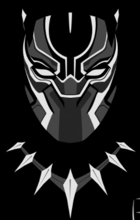

Chadwick Boseman Black Panther

Mon expérience
-
En 2012, Chadwick Boseman est ainsi l'un des premiers rôles du film d'action indépendant,
-
Ce sont ses rôles dans les longs métrages biographiques 42 en 2013 et Get on Up en 2014 qui le propulsent en tant qu'acteur. Dans le premier, il interprète le premier joueur de baseball afro-américain à avoir évolué en ligue majeure, Jackie Robinson et dans le second, il incarne du pape du funk, James Brown
-
Ce sont ses rôles dans les longs métrages biographiques 42 en 2013 et Get on Up en 2014 qui le propulsent en tant qu'acteur. Dans le premier, il interprète le premier joueur de baseball afro-américain à avoir évolué en ligue majeure, Jackie Robinson et dans le second, il incarne du pape du funk, James Brown
-
L'année d'après, il confirme et séduit grâce à deux productions : il porte le thriller Message from the King du belge Fabrice Du Welz et convainc, également et à nouveau, dans le registre du film biographique pour le drame Marshall, dans lequel il incarne le juriste Thurgood Marshall.
Chadwick Boseman